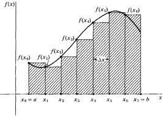
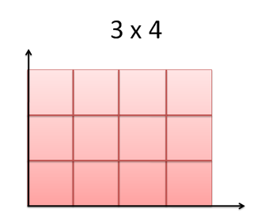

Entegralleri Türetmek
Aynen türevleri limitler üzerinden formalize edebildiğimiz gibi entegralleri de toplamların eriştiği bir limit olarak formalize edebiliriz. Bu bakış açısını matematiksel olarak tarif eden Bernhard Riemann'dir ve tarif ettiği entegral formalizmi Riemann toplamı (Riemann sum) olarak bilinir [1, sf. 340].
Diyelim ki bir $f(x)$ fonksiyonumuz var, iki nokta arasındaki $x$ yatay eksenini $\Delta x$ büyüklüğünde $n$ tane eşit parçaya bölüyoruz, her parça ortasındaki $c_k$'de fonksiyonun değeri tabii ki $f(c_k)$, bu dikdörtgen parçasının yüksekliği, genişliği $\Delta x$. Riemann formalizmi için bu parçaların eşit büyüklükte olması gerekmez, biz alttaki örnek için eşit diyeceğiz, ve
$$ I = \lim_{n \to \infty} \sum_{k=1}^{n} f(c_k) \Delta x $$
hesabına bakacağız. Örnek $f(x) = x$ olsun, yani 45 dereceli çizginin altındaki alan hesabı, $I = \int_{0}^{b} x \mathrm{d} x$.

Her parca esit genislikte, $n$ tane var, $\Delta x = (b - 0) / n = b/n$, parcalar $P = \left\{ 0, \frac{b}{n}, \frac{3b}{n}, ..., \frac{nb}{n} \right\}$ her $c_k = \frac{kb}{n}$. O zaman
$$ \sum_{k=1}^{n} f(c_k) \Delta x = \sum_{k=1}^{n} \frac{kb}{n} \cdot \frac{b}{n} $$
$f(x) = x$ olduğu için doğal olarak $f(c_k)=c_k$ diyebildik. Devam edelim,
$$ = \frac{kb^2}{n^2} = \frac{b^2}{n^2} \sum_{k=1}^{n} k $$
$\sum_{k=1}^{n} k$ ilginç bir toplam, aslında 1'den n'ye kadar tüm sayıları topla diyor, bu toplamın $\frac{n(n+1)}{2}$ olduğunu biliyoruz,
$$ = \frac{b^2}{n^2} \frac{n(n+1)}{2} $$
$$ \frac{b^2}{2} (1 + \frac{1}{n}) $$
$n \to \infty$ iken üstteki ifadenin $b^2/2$ limitine yaklaştığını biliyoruz, yani
$$ \int_{0}^{b} x \mathrm{d} x = \frac{b^2}{2} $$
Ekler
Entegralleri Nasıl Düşünelim
Calculus kitaplarında entegralleri anlatmak için çoğu zaman "toplam" kavramı on plana çıkarılır, mesela entegralin alttaki resimde $f(x)$ fonksiyonunun altında kalan ufak ufak dikdörtgenlerinin alanlarının "toplamı" olduğundan bahsedilir.

Fakat bu tür bir anlatım bazen karışıklığa yol açabiliyor [2]. Daha iyi bir anlatım entegralin "değişen değerlerin çarpımı" olduğudur. Alttaki resimdeki dikdörtgeni düşünelim,

ve diyelim ki bir dikdörtgen, entegralin hesapladığı alanı yaklaşıksal olarak temsil ediyor. Dikdörtgen alanı nasıl hesaplanır? İki kenarının çarpılmasıyla! Entegral de aslında böyle bir hesaptır, sadece kenarlardan biri sabit değildir, ve sürekli değişmektedir. Bu tür bir anlayış birimleri sonuca dahil etmek gerektiğinde ise yarar, mesela yatay ekşen zaman $t$ işe, ve dikey eksen hız $v(t)$ ise, katedilen mesafe, $v(t)$ nasıl bir şekilde verilmiş olursa olsun,
$$ Mesafe = \int v(t) \mathrm{d} t $$
formülüyle hesaplanacaktır. Eğer hız ve zaman sabit olsalar, mesela 5 ile 4 gibi, o zaman hesap son derece basit olacaktı, 3 x 4 = 12 ile sonucu bulacaktık.
Tabii ki çarpmak ile toplamak arasında yakın bağlantılar var, mesela 3 x 4'u şu şekilde resmedelim

Burada, evet, 3 değerini dört kere birbiriyle topluyoruz, 3 + 3 + 3 + 3 = 12 ve bu durum 3 x 4 ile aynı sonucu veriyor. Fakat 3'lerin toplamı, eğri altındaki alan zihniyetini daha ilerletmeden azıcık farklı bir durumu düşünelim.

Bu durumda dikey eksendeki kolonlara bir ek yaptık, ama bu ekin genişliği tam bir kolon değil, yarım bir kolon. Bu durumda alan hesabını sadece dikey kolonların toplanması olarak yapsakdik 3'u beş kere toplamamız gerekirdi, ve 15 elde ederdik, yanlış bir hesap yapmış olurduk.
Toplamın doğru olması için yatay ekşenin genişliğinin hesaba katılması gerekir, 31 + 31 + 31 + 31 + 3*0.5 = 13.5. Ya da tüm genişliği tüm yükseklik ile çarparız 3 * 4.5 = 13.5.
Peki ilk örneğe dönersek, madem çarpımlardan bahsediyoruz, diyelim ki $v(t) = 2t$ o zaman $t \cdot 2t$ diyemez miyiz? Bu da olmaz, çünkü $t\cdot 2t = 2t^2$ bize sadece tek bir $t$ anındaki bir hesabı veriyor. Biz verilen bir başlangıç ve bitiş noktaları arasındaki "tüm $t$'ler üzerindeki" katedilen mesafeyle ilgileniyoruz.
Yani entegral denince aklımıza çarpım gelsin, $x,y$ eksenleri bağlamında, $y$ eksenindeki $f(x)$'i $x$'i çarpıyoruz, bu çarpım $x$ için entegrale $dx$ olarak yansıyor, $f(x)$ ise entegre edilen fonksiyon haline geliyor.
Birimleri hesaba katarsak anlatılanlar biraz daha anlamlanır belki. Eğer hız km / saat ise, zaman saat ise, sadece hızların toplamı mesafe birimini km / saat yapar, bu yanlış olur. Ama çarpım olarak düşünürsek km / saat * saat = km sonucunu verir ki bu mesafenin birimidir.
Ortalama mı, Toplam mı?
Diğer yandan bazen bir aralıkta bir fonksiyonun entegrali alındığında onun "ortalamasından" da bahsedildiğinin görebiliriz. Peki bir entegral bir toplam midir (ya da akıllı çarpım) yoksa bir ortalama mı? Aslında bu iki kavram arasında fazla bir fark yok; sonuçta 10 tane sayının toplamı ile averajı arasında 1/10 sabiti ile çarpım haricinde bir fark yok [3].
Kaynaklar
[1] Thomas, Thomas Calculus 11th Edition
[2] Better Explained, A Calculus Analogy: Integrals as Multiplication, http://betterexplained.com/articles/a-calculus-analogy-integrals-as-multiplication/
[3] Quora, https://www.quora.com/Is-an-integral-more-analogous-to-a-sum-or-to-an-average
Yukarı